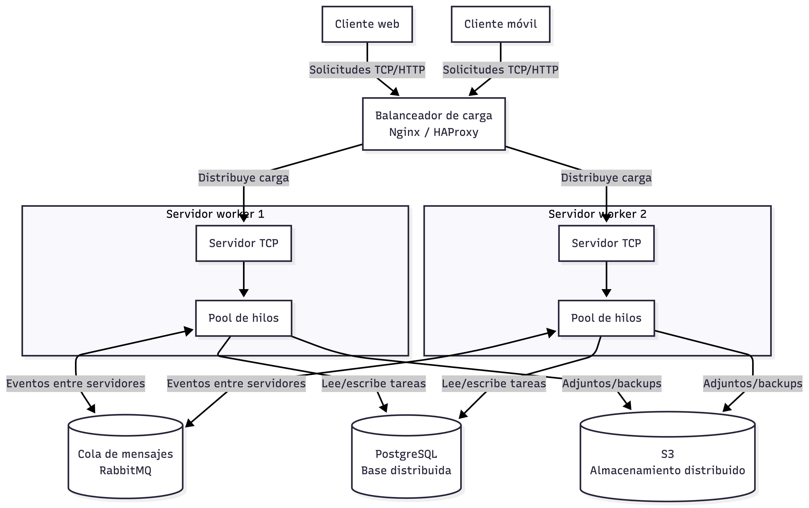

Resumen
El proyecto transforma la entrega anterior en una aplicación distribuida simple. El cliente de consola se conecta al servidor mediante sockets TCP, envía operaciones de gestión de tareas y recibe respuestas en JSON.
El servidor acepta múltiples conexiones, delega las solicitudes a un pool de hilos y guarda usuarios y tareas en SQLite como persistencia local del prototipo.
Componentes implementados
Cliente TCP
Menú interactivo para registrarse, iniciar sesión, crear, listar
y eliminar tareas.
Servidor TCP
Escucha conexiones en red y recibe solicitudes JSON terminadas en
salto de línea.
Pool de workers
Procesa las tareas recibidas usando hilos administrados con
ThreadPoolExecutor.
Persistencia
Usa SQLite para conservar usuarios, contraseñas hasheadas y
tareas.
Ejecución
Servidor
python3 servidor.py
Opcionalmente:
python3 servidor.py --host 127.0.0.1 --port 5001 --workers 4
Cliente
python3 cliente.py
Opcionalmente:
python3 cliente.py --host 127.0.0.1 --port 5001
Diagrama de sistema distribuido para el punto 1
